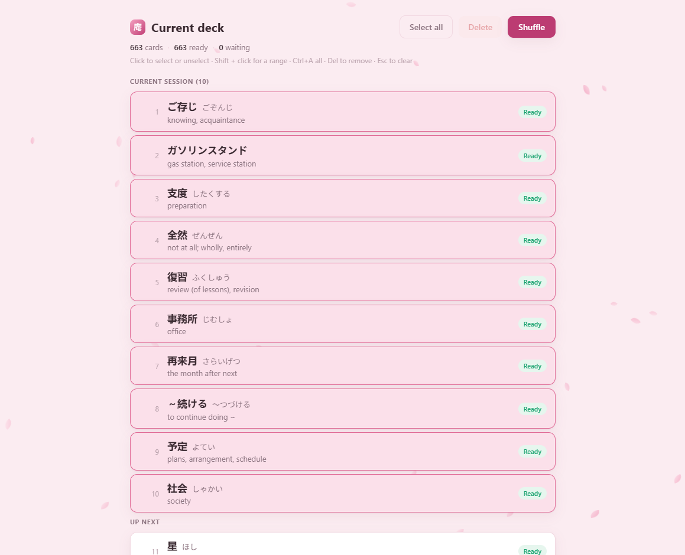
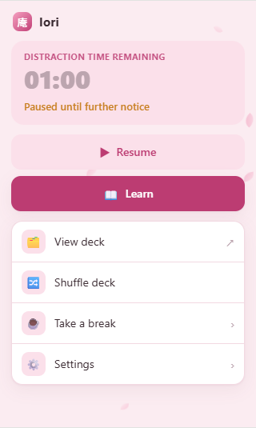
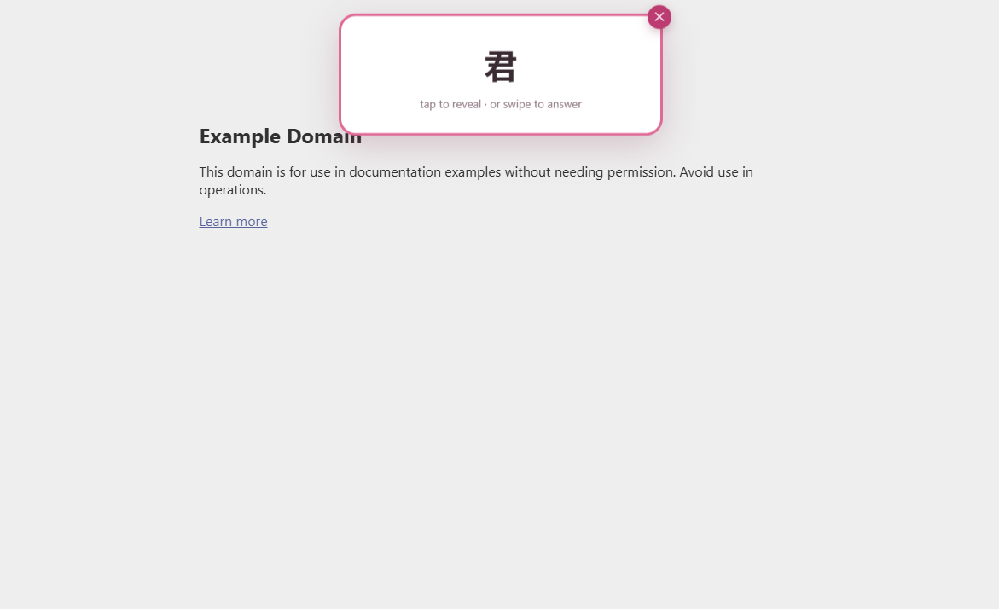

Personal project · 2026–now
Iori
A browser extension that turns doomscrolling into Japanese practice: when a feed pulls you under, it surfaces a flashcard over the page: a small refuge to step into for a moment, scheduled by a spaced-repetition engine and served entirely from your own machine.

About the project
Iori started from a simple observation: the time lost scrolling social feeds could go into learning Japanese instead. An attention state machine watches how long you dwell on a distraction site and, at the right moment, slides a flashcard over the page. Swipe up to dismiss, swipe down to delete the card, or grade it and drop back into your feed.
The name carries the idea. 庵 (iori) is a hermitage, the small thatched hut a poet retreats to, not a temple you visit. The feed is the 沼 (numa), the swamp you sink into; the 庵 is what surfaces. So a card is designed as a refuge, never an alarm: quiet copy, falling sakura petals, no streaks, no red badges, no guilt.
Reviews are scheduled with the SM-2 spaced-repetition algorithm, the same family Anki uses:
cards you know come back later, cards you miss come back soon. All the logic lives in a
local Python backend built as a pure, fully tested core. The Manifest V3 extension
holds no business logic and simply relays browser events to it over a loopback HTTP call.
Decks, review history and settings persist to a local file, and the server only ever binds
to 127.0.0.1: no account, no cloud, no telemetry.
Main features
-
Scroll interruption
An attention state machine tracks time spent on distraction sites and pops a card at the right moment, with cooldowns, snoozes and a daily quota so it never nags.
-
SM-2 scheduling
Spaced repetition in the Anki family: known cards come back later, missed ones come back soon, on a card-by-card interval.
-
Add words as you browse
Select any word, Japanese or English, and add it from the right-click menu. It resolves through the local dictionary, falling back to a keyless online translator when needed.
-
Bundled JLPT decks
Ready-made N5–N1 decks (8,000+ cards) you can load in a click, on top of any words you mine yourself.
-
Local Japanese dictionary
A JMdict database compiled to SQLite, with English and French glosses and frequency-based ranking so the words that matter surface first.
-
100% local & private
Flask backend and local storage on your own machine: bound to loopback only, no account, no cloud, no telemetry.
Screenshots


Tech stack
A TypeScript Manifest V3 extension (Chromium and Firefox) renders the overlay in a
Shadow DOM and forwards every browser event to a local Python / Flask backend. The core
(the attention machine and the SM-2 engine) is written as pure, side-effect-free functions
covered by a pytest suite. The dictionary is a JMdict dump built offline into SQLite, with
word-frequency ranking from wordfreq, and unknown selections fall back to a
keyless machine translator. Everything runs on one machine, over 127.0.0.1.